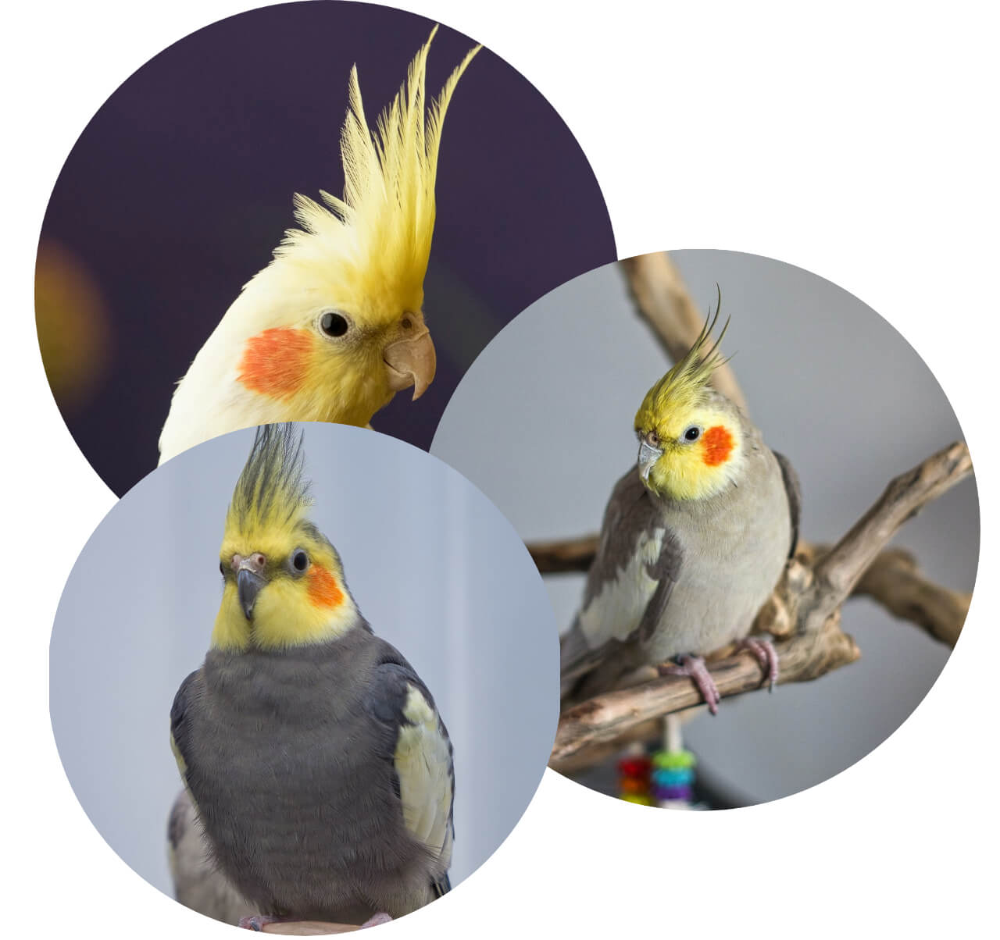
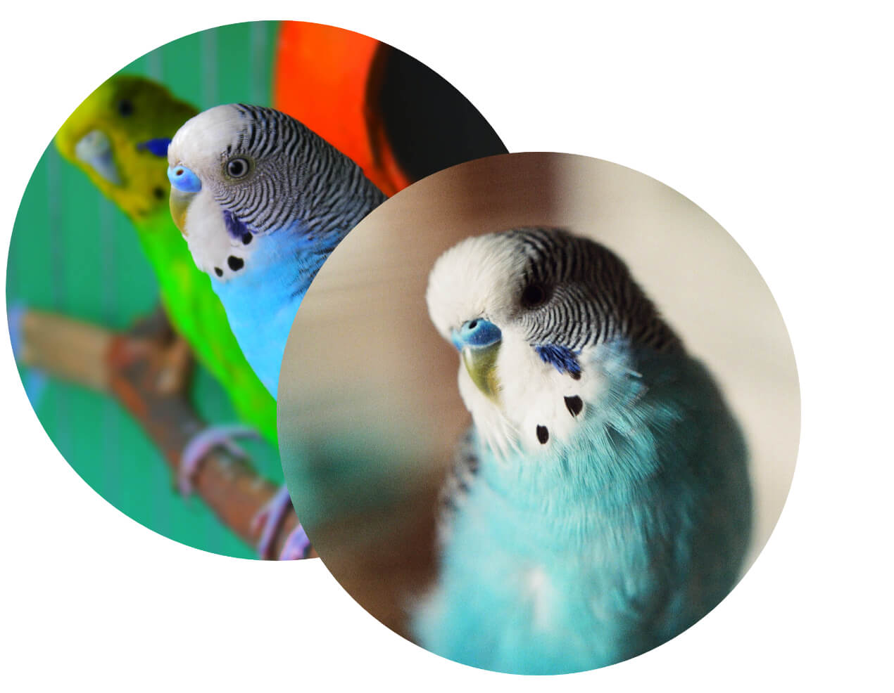
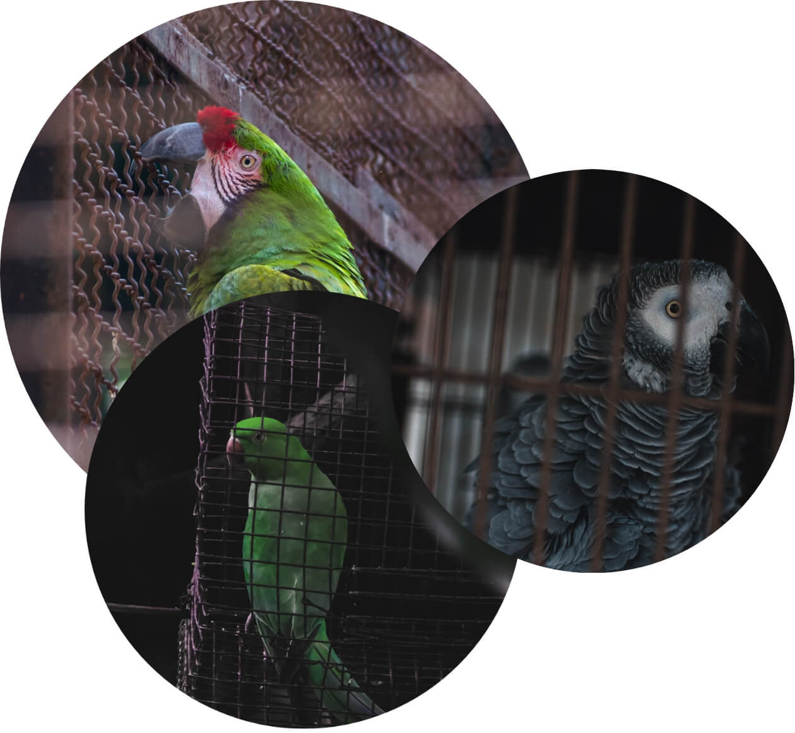

Hur du tar hand om din papegoja
Investera i en säker, rymlig bur
Din papegoja behöver en bur att kalla sitt hem. Burar finns i olika former och storlekar. När du handlar är det viktigaste att tänka på att buren måste vara tillräckligt bred för att din papegoja ska kunna sprida sina vingar. Det är här din fågel kommer att tillbringa större delen av sin tid, så du vill inte köpa en bur som är för liten. Du borde också ha ett litet hänglås till dörren. Fåglar är otroligt smarta och händiga varelser, så om du inte är försiktig kan din papegoja ta reda på hur de kan rymma från buren. Ett hänglås säkerställer att din fågel stannar inne i sin bur, där den är säker när du inte är hemma. Du kan också lägga till papperspåsar, lådor och små handdukar i buren för att ge din fågel något att gömma sig under. Säkerhet är viktigt för de flesta fåglar, så det kan få dem att känna sig riktigt hemma i buren om man ger dem något att snygga sig under.
Placera buren på en bra plats
När det gäller att ta han om en papegoja är en av de viktigaste sakerna att lista ut den bästa platsen för buren. Fåglar är känsliga för förändringar i temperatur, ljus och ångor, och de behöver god ventilation. Även ångor från rengöringskemikalier, cigaretter, kokgaser och nya färger kan skada din fågel. Placera därför inte din fågelbur i köket. Du kanske tillbringar större delen av din tid i köket, men ångorna från matlagning och rengöring kan vara dödliga för din papegoja. Ytterligare en plats som är viktig att undvika är nära ett fönster. Det kan verka som en härlig plats med fantastisk utsikt, men direkt solljus kan få din fågel att överhettas. Dam kan också vara ett problem, därför bör du hålla buren borta från ventilationer, fönster och dörrar. Men fåglar är sociala varelser, så placera buren i ett rum som får mycket användning, som ett vardagsrum där du kan spendera mycket tid med din papegoja.
Rengör buren ofta
Det är viktigt att hålla din fågelbur ren, och det enklaste sättet att göra det är att rengöra buren varannan dag. Det bästa alternativet för detta är papper; det är billigt, lättillgänglig och lätt att rengöra. Tidningar, papperspåsar, pappershanddukar eller strimlat papper fungerar bra. Var noga med att välja en bur som har ett galler över underlaget; du vill inte att din fågel ska ha direkt kontakt med sin avföring eftersom den kan innehålla bakterier och mögel som är skadligt din papegoja.Mata din papegoja med en näringsrik kost
För en lycklig och hälsosam papegoja, mata din fågel minst en gång om dagen. Rådgör med din veterinär för att avgöra hur mycket mat din papegoja behöver. Tänk på att papegojor behöver en god mängd färsk frukt och grönsaker för att komplettera deras blandade foder också. Använd nötter och frön som godis för att belöna gott beteende.Observera att fåglar har känsliga matsmältningsspår. Livsmedel som verkar hälsosamma kan faktiskt vara skadliga eller till och med dödliga för din papegoja. Till exempel är livsmedel som kan skada din fågel choklad, avokado, lök, vitlök, fruktgropar och äppelfrön, livsmedel med hög fetthalt, mat med högt natriuminnehåll, livsmedel med hög socker och sockerfritt godis.
Ge leksaker och tuggbara godisar
Fåglar är lekfulla i sin natur, vilket innebär att de älskar leksaker. Leksaker kan hjälpa till att lindra uttråkan om din fågel är ensam hemma under längre perioder. De kan också uppmuntra till träning. Fåglar älskar att tugga på leksaker och mat, och tugga hjälper till att hålla näbben i toppskick, så det är viktigt att du förser din papegoja med mycket tuggbara leksaker. Tuggbara leksaker kan till exempel vara kottar, naturfiberrep och trädgrenar. Vissa fåglar gillar till och med att riva upp papper och majskolvar.
Hjälp din papegoja med ryktning
Papegojor inte kräver mycket ryktning som tur. För många fåglar gör klo- och vingtrimmning tricket. Riktlinjer föreslår att du klipper din papegojas naglar när de blir skarpa eller obekväma att hantera. Innan du klipper på fågelns vingar, kontakta din veterinär. Vissa ägare väljer att inte klippa på fåglarnas vingar för att låta sina fåglar flyga fritt. Om du väljer att lämna dina fågels vingar oklippta, se till att deras flygande utrymme förhindrar flykt.
Slutligen, låt din fågel bada ofta. De flesta fåglar tycker om att plaska runt i badet för att hålla fjädrarna i obefläckat skick, men varje fågel är lite annorlunda. Vissa föredrar att duscha i ett handfat eller under en kran, medan andra gillar att bli sprutad med vatten från en sprayflaska eller plaska runt i ett grunt vattenfat. Ge din fågel gott om tillgång till vatten för att se vilken badmetod han eller hon föredrar.
Misskötseln av papegojor
Ett allvarligt & stort problem
Den genomsnittliga papegojan i fångenskap spenderar största delen av sitt liv bunden till en bur, ätandes en enformig, ofullständig kost av fabriksgjord fågelmat. 
Många kan inte flyga eftersom deras vingar har blivit klippta för att hålla dem "under kontroll" och för att hindra dem från att skada sig själva genom att flyga in i väggar och fönster, tugga på saker i hemmet och hamna i andra faror. Få är hållna i grupper av sin egen art.
Papegojor och andra exotiska fåglar är vilda djur i andra länder, och som sådana, är deras inneboende mentala och fysiska behov intakta. Olyckligtvis, när det gäller fåglar, så är berövandet av deras naturliga beteenden (som att flyga och leva i flock) en oundviklig del av fångenskapen.
Fångenskapsuppfödda papegojor är fortfarande vilda. Deras naturliga nyfikenhet, känslighet, intelligens, lekfullhet och förmåga att bilda band med människor kan locka människor att hålla dem i sina hem, men papegojor kräver också frihet
Var med och minska misskötseln!
Minska misskötseln av papegojor genom att se till att de har en stor bur, god mat och massor av leksaker för att alltid kunna leka och röra sig fritt. Det är också mycket viktigt att ibland släppa ut din fågel i ditt hus eller lägenhet, eller ett enstaka rum och låta de flyga fritt, precis som i det vilda! Socialisera också med din papegoja och få den att känna sig älskad genom att spendera mycket tid med den, prata, leka och gosa dem om de gillar det!
Kom ihåg att alla papegojor är unika liksom människor och ta tid för att lära känna din fågel, vad den tycker om, inte tycker om och hitta på saker att göra tillsammans!